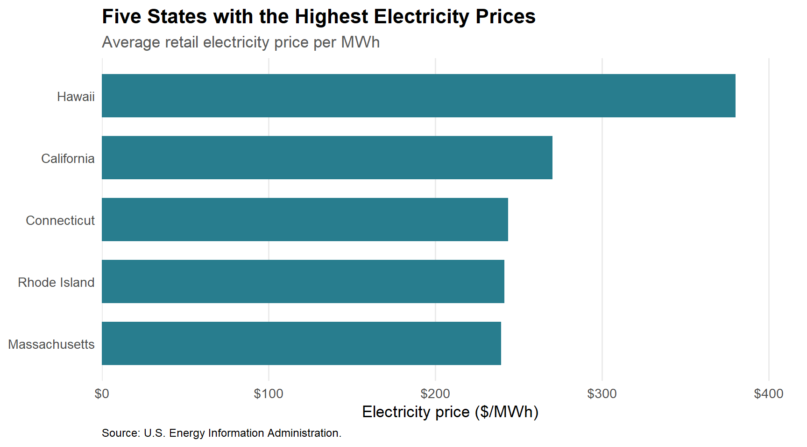
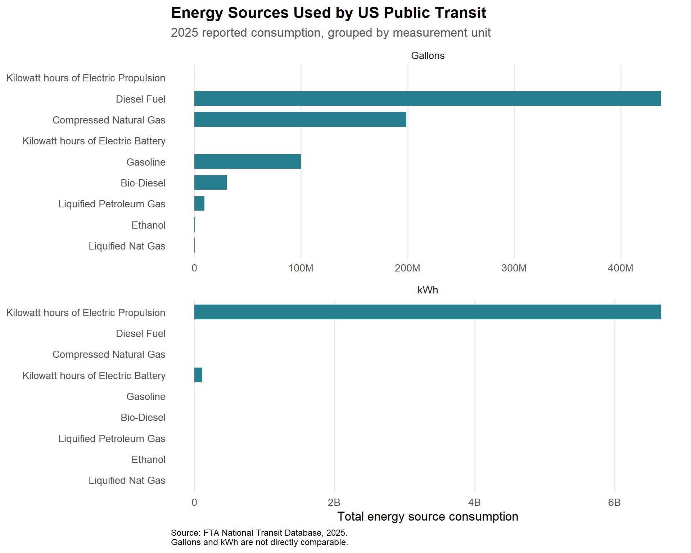
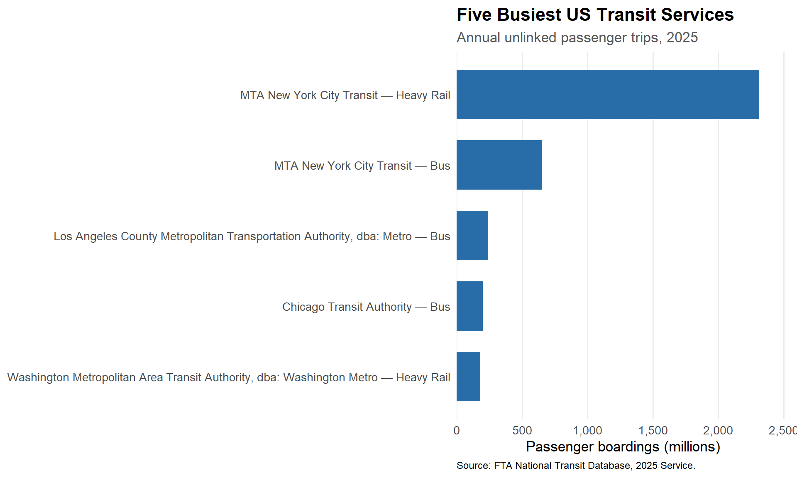
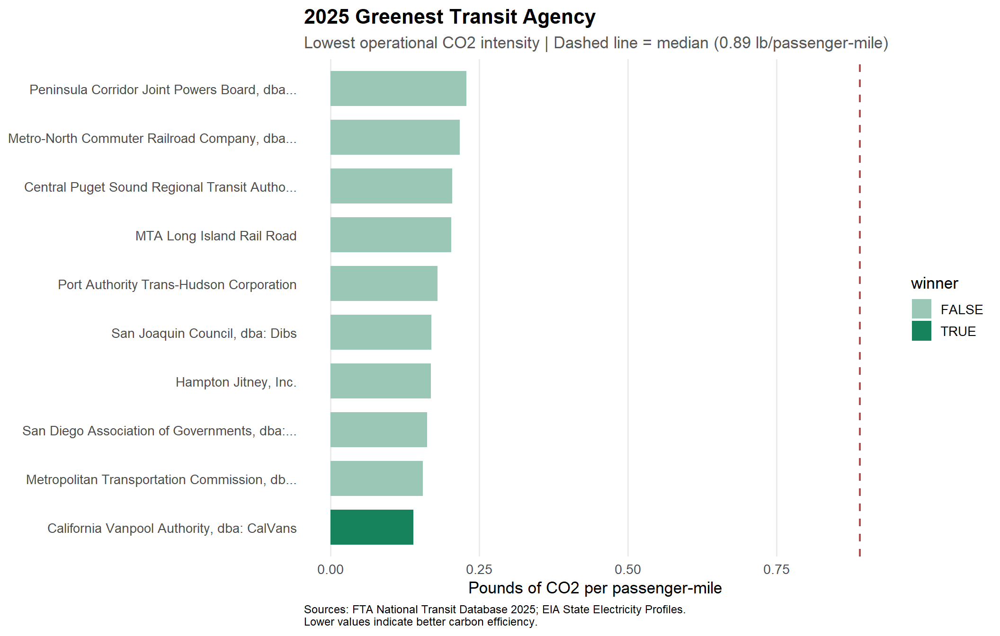
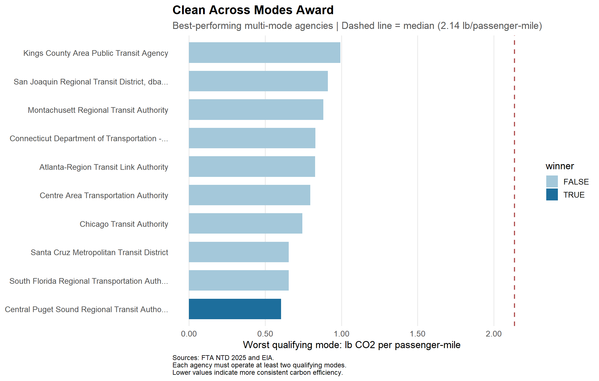

library(tidyverse)
library(stringr)
library(httr2)
library(rvest)
library(fs)
library(readxl)
library(gt)
library(scales)Mini-Project #02 - Green Transit Alliance Awards
Identifying Environmentally Responsible US Public Transit Systems
Data Acquisition
1a: State Electricity Profiles
The first dataset is from the U.S. Energy Information Administration (EIA). It shows how much electricity each state produces, its electricity prices, main energy source, and CO2 emissions.
Code
get_eia_sep <- function(state, abbr){
state_formatted <- str_to_lower(state) |> str_replace_all("\\s", "")
dir_name <- fs::path("data", "mp02")
file_name <- fs::path(dir_name, state_formatted)
fs::dir_create(dir_name, recurse=TRUE)
if(!fs::file_exists(file_name)){
BASE_URL <- "https://www.eia.gov"
RESPONSE <- request(BASE_URL) |>
req_url_path("electricity",
"state",
state_formatted) |>
req_headers(
`User-Agent` = "Mozilla/5.0 (Macintosh; Intel Mac OS X 10.15; rv:149.0) Gecko/20100101 Firefox/149.0"
) |>
req_retry(
max_tries = 4,
) |>
req_perform(path = file_name)
resp_check_status(RESPONSE)
}
TABLE <- read_html(file_name) |>
html_element("table") |>
html_table() |>
mutate(Item = str_to_lower(Item))
if("U.S. rank" %in% colnames(TABLE)){
TABLE <- TABLE |> rename(Rank = `U.S. rank`)
}
CO2_MWh <- TABLE |>
filter(Item == "carbon dioxide (lbs/mwh)") |>
pull(Value) |>
str_replace_all(",", "") |>
as.numeric()
PRIMARY <- TABLE |>
filter(Item == "primary energy source") |>
pull(Rank)
RATE <- TABLE |>
filter(Item == "average retail price (cents/kwh)") |>
pull(Value) |>
as.numeric()
GENERATION_MWh <- TABLE |>
filter(Item == "net generation (megawatthours)") |>
pull(Value) |>
str_replace_all(",", "") |>
as.numeric()
data.frame(CO2_MWh = CO2_MWh,
primary_source = PRIMARY,
electricity_price_MWh = RATE * 10, # / 100 cents to dollars &
# * 1000 kWh to MWH
generation_MWh = GENERATION_MWh,
state = state,
abbreviation = abbr
)
}
EIA_SEP_REPORT <- map2(state.name, state.abb, get_eia_sep) |> list_rbind()1b: National Transit Database: Energy Consumption
The second dataset shows how much fuel and electricity public transit agencies reported using in 2025.
Code
load_ntd_energy <- function(){
# Create 'data/mp02' directory if not already present
DATA_DIR <- fs::path("data", "mp02")
fs::dir_create(DATA_DIR, recurse=TRUE)
NTD_ENERGY_FILE <- fs::path(DATA_DIR, "2025_ntd_energy.xlsx")
if(!fs::file_exists(NTD_ENERGY_FILE)){
library(httr2)
request("https://www.transit.dot.gov/") |>
req_url_path("sites",
"fta.dot.gov",
"files",
"2026-09",
"2025 Energy Consumption_260806.xlsx") |>
req_headers(
`User-Agent` = "Mozilla/5.0 (Macintosh; Intel Mac OS X 10.15; rv:149.0) Gecko/20100101 Firefox/149.0") |>
req_perform(NTD_ENERGY_FILE)
}
if(file.info(NTD_ENERGY_FILE)$size < 1e4){
cat("I was unable to download the NTD Energy File. Please try again.\n")
stop("Download failed. Please delete the corrupted file by running `unlink('data/mp02/2025_ntd_energy.xlsx')` and try again.")
}
to_numeric_fill_0 <- function(x){
x <- if_else(x == "-", NA, x)
replace_na(as.numeric(x), 0)
}
read_excel(NTD_ENERGY_FILE) |>
select(-c(`Reporter Type`,
`Reporting Module`,
`Gallons of Other Fuel`,
`Other Fuel Description`)) |>
mutate(across(-c(`Agency Name`,
`Mode`,
`TOS`),
to_numeric_fill_0)) |>
group_by(`NTD ID`, `Mode`, `Agency Name`) |>
summarize(across(where(is.numeric), sum),
.groups = "keep") |>
mutate(ENERGY = sum(c_across(c(where(is.numeric))))) |>
filter(ENERGY > 0) |>
select(-ENERGY) |>
ungroup()
}
NTD_ENERGY <- load_ntd_energy()1c: National Transit Database: Service Provided
The last dataset has information about ridership, passenger miles, and the services provided by transit agencies.
Code
load_ntd_service <- function(){
# Create 'data/mp02' directory if not already present
DATA_DIR <- fs::path("data", "mp02")
fs::dir_create(DATA_DIR, recurse=TRUE)
NTD_SERVICE_FILE <- fs::path(DATA_DIR, "2025_ntd_service.csv")
if(!fs::file_exists(NTD_SERVICE_FILE)){
request("https://data.transportation.gov/resource/4fir-qbim.csv") |>
req_url_query(`$query`=paste(
"SELECT `_5_digit_ntd_id` AS `NTD_ID`",
"`max_agency` AS `AGENCY`",
"`max_reporter_type` AS `reporter_type`",
"`max_organization_type` AS `organization_type`",
"`max_city` AS `city`",
"`max_state` AS `state`",
"`mode`",
"`type_of_service`",
"`max_primary_uza_code` as `uza_code`",
"`max_primary_uza_name` as `uza_name`",
"`max_primary_uza_area_sq_miles` as `uza_sq_miles`",
"`max_primary_uza_population` as `uza_population`",
"`max_service_area_sq_miles` as `service_area_sq_miles`",
"`max_service_area_population` as `service_area_population`",
"`questionable_record` as `flagged_likely_inaccurate`",
"`sum_unlinked_passenger_trips_upt` as `total_upt`",
"`sum_passenger_miles` WHERE caseless_one_of(`report_year`, '2025') limit 50000",
sep=",")) |>
req_headers(
`User-Agent` = "Mozilla/5.0 (Macintosh; Intel Mac OS X 10.15; rv:149.0) Gecko/20100101 Firefox/149.0") |>
req_perform(NTD_SERVICE_FILE)
}
if(file.info(NTD_SERVICE_FILE)$size < 1e4){
cat("I was unable to download the NTD Service File. Please try again.\n")
stop("Download failed. Please delete the corrupted file by running `unlink('data/mp02/2025_ntd_service.xlsx')` and try again.")
}
read_csv(NTD_SERVICE_FILE) |>
mutate(flagged_likely_inaccurate = !is.na(flagged_likely_inaccurate))
}
NTD_SERVICE <- load_ntd_service()Data Cleaning and Preparation
2: Recording Transit Modes
The NTD data uses short codes for transportation modes. I change these codes to their full names so they are easier to understand.
Code
MODE_NAMES <- c(
"AR" = "Alaska Railroad",
"CC" = "Cable Car",
"CB" = "Commuter Bus",
"CR" = "Commuter Rail",
"DR" = "Demand Response",
"DT" = "Demand Response Taxi",
"FB" = "Ferryboat",
"HR" = "Heavy Rail",
"IP" = "Inclined Plane",
"JT" = "Jitney",
"LR" = "Light Rail",
"MB" = "Bus",
"MG" = "Monorail",
"PB" = "Publico",
"RB" = "Bus Rapid Transit",
"SR" = "Streetcar Rail",
"TB" = "Trolleybus",
"TR" = "Aerial Tramway",
"VP" = "Vanpool",
"YR" = "Hybrid Rail"
)
NTD_ENERGY <- NTD_ENERGY |>
mutate(
mode_code = Mode,
Mode = recode(
Mode,
!!!MODE_NAMES,
.default = "Unknown"
)
)
NTD_SERVICE <- NTD_SERVICE |>
mutate(
mode_code = mode,
mode = recode(
mode,
!!!MODE_NAMES,
.default = "Unknown"
)
)Data Integration and Initial Exploration
In this section, I look at electricity production, energy use, and transit services across the US.
I use electricity data from the U.S. Energy Information Administration (EIA) and 2025 transit data from the Federal Transit Administration (FTA).
Code
# Identify gallon-based fuel columns
GALLON_COLUMNS <- names(NTD_ENERGY)[
str_detect(
names(NTD_ENERGY),
regex("^Gallons of ", ignore_case = TRUE)
)
]
# Identify electricity consumption columns
ELECTRIC_COLUMNS <- names(NTD_ENERGY)[
str_detect(
names(NTD_ENERGY),
regex("electric|kilowatt|kwh", ignore_case = TRUE)
) &
!str_detect(
names(NTD_ENERGY),
regex("^Gallons of ", ignore_case = TRUE)
)
]
# Validate column selections
print(GALLON_COLUMNS)[1] "Gallons of Bio-Diesel" "Gallons of Bunker Fuel"
[3] "Gallons of Compressed Natural Gas" "Gallons of Diesel Fuel"
[5] "Gallons of Ethanol" "Gallons of Gasoline"
[7] "Gallons of Kerosene" "Gallons of Liquified Nat Gas"
[9] "Gallons of Liquified Petroleum Gas"Code
print(ELECTRIC_COLUMNS)[1] "Kilowatt hours of Electric Battery"
[2] "Kilowatt hours of Electric Propulsion"Code
stopifnot(
length(GALLON_COLUMNS) > 0,
length(ELECTRIC_COLUMNS) > 0
)
# Convert energy data into long format
ENERGY_LONG <- NTD_ENERGY |>
pivot_longer(
cols = all_of(c(GALLON_COLUMNS, ELECTRIC_COLUMNS)),
names_to = "fuel_type",
values_to = "amount"
) |>
mutate(
unit = if_else(
fuel_type %in% GALLON_COLUMNS,
"Gallons",
"kWh"
),
fuel_name = str_remove(fuel_type, "^Gallons of ")
)
# Plot theme
eda_theme <- function() {
theme_minimal(base_size = 13) +
theme(
plot.title = element_text(
face = "bold",
size = 16
),
plot.subtitle = element_text(
color = "gray35"
),
plot.caption = element_text(
size = 9,
hjust = 0
),
panel.grid.minor = element_blank(),
panel.grid.major.y = element_blank(),
axis.title.y = element_blank()
)
}3a: Initial Analysis of State Electricity Profiles Data
Question 1: Which 5 states have the most expensive retail electricity?
To identify states with the highest electricity prices, we rank the states by their average retail electricity prices per megawatt-hour.
Code
EIA_SEP_REPORT |>
slice_max(
electricity_price_MWh,
n = 5,
with_ties = FALSE
) |>
ggplot(
aes(
x = electricity_price_MWh,
y = reorder(state, electricity_price_MWh)
)
) +
geom_col(
fill = "#287D8E",
width = 0.7
) +
scale_x_continuous(
labels = label_dollar(),
expand = expansion(mult = c(0, 0.1))
) +
labs(
title = "Five States with the Highest Electricity Prices",
subtitle = "Average retail electricity price per MWh",
x = "Electricity price ($/MWh)",
y = NULL,
caption = "Source: U.S. Energy Information Administration."
) +
eda_theme()
The figure shows the five states with the highest average retail electricity prices. Higher electricity prices can increase the cost of running electric public transit.
Question 2: Which 5 states have the ‘dirtiest’ electricity mix?
Here, the dirtiest electricity mix means the states that release the most pounds of CO2 for each MWh of electricity they produce.
Code
EIA_SEP_REPORT |>
slice_max(
CO2_MWh,
n = 5,
with_ties = FALSE
) |>
select(
state,
primary_source,
CO2_MWh,
generation_MWh
) |>
gt() |>
cols_label(
state = "State",
primary_source = "Primary Energy Source",
CO2_MWh = "CO2 (lb/MWh)",
generation_MWh = "Total Generation (MWh)"
) |>
fmt_number(
columns = c(CO2_MWh, generation_MWh),
decimals = 0
) |>
tab_header(
title = "Five States with the Dirtiest Electricity Mix",
subtitle = "Ranked by carbon dioxide emissions intensity"
) |>
tab_source_note(
"Source: U.S. Energy Information Administration."
)| Five States with the Dirtiest Electricity Mix | |||
| Ranked by carbon dioxide emissions intensity | |||
| State | Primary Energy Source | CO2 (lb/MWh) | Total Generation (MWh) |
|---|---|---|---|
| West Virginia | Coal | 1,912 | 50,594,818 |
| Kentucky | Coal | 1,744 | 66,950,848 |
| Wyoming | Coal | 1,724 | 40,709,150 |
| Missouri | Coal | 1,456 | 66,875,710 |
| Hawaii | Petroleum | 1,426 | 9,160,979 |
| Source: U.S. Energy Information Administration. | |||
States that rely more on fuels with high carbon emissions usually release more CO2 per MWh. This affects the emissions we estimate for electric transit vehicles, since producing their electricity also creates emissions.
Question 3: On average, how many pounds of CO2 are emitted per MWh of electricity produced in the US?
A regular average would give every state the same weight, even though some states produce much more electricity than others.
To account for this, I use a weighted average based on how much electricity each state produces.
\[ \bar{E}_w = \frac{\sum_{i=1}^{n} E_iG_i} {\sum_{i=1}^{n}G_i} \]
where:
- \(E_i\) = CO2 emissions per MWh in state \(i\).
- \(G_i\) = electricity generated in state \(i\).
- \(n\) = number of states.
Code
NATIONAL_CO2 <- EIA_SEP_REPORT |>
summarise(
weighted_CO2 = weighted.mean(
CO2_MWh,
w = generation_MWh,
na.rm = TRUE
)
) |>
pull(weighted_CO2)Across the 50 US states, the weighted average is about 784.86 pounds of CO2 per MWh. States that produce more electricity have more weight in this average.
3b: National Transit Database Energy Consumption
Question 1: Which five transit agencies consumed the most gallons of fuel, and how was consumption distributed by fuel type?
To identify the largest fuel consumers, we first combine all gallon-based fuel categories for each transit agency.
We can leave electricity out of this ranking because it is measured in kWh, not gallons.
Code
TOP_FUEL_AGENCIES <- ENERGY_LONG |>
filter(unit == "Gallons") |>
group_by(
`NTD ID`,
`Agency Name`
) |>
summarise(
total_gallons = sum(amount, na.rm = TRUE),
.groups = "drop"
) |>
arrange(desc(total_gallons)) |>
slice_head(n = 5)
TOP_FUEL_BREAKDOWN <- ENERGY_LONG |>
filter(unit == "Gallons") |>
semi_join(
TOP_FUEL_AGENCIES,
by = c("NTD ID", "Agency Name")
) |>
group_by(
`NTD ID`,
`Agency Name`,
fuel_name
) |>
summarise(
gallons = sum(amount, na.rm = TRUE),
.groups = "drop"
) |>
filter(gallons > 0) |>
left_join(
TOP_FUEL_AGENCIES,
by = c("NTD ID", "Agency Name")
) |>
mutate(
agency_label = paste0(
`Agency Name`,
" (",
scales::comma(total_gallons, accuracy = 1),
" total gallons)"
)
) |>
arrange(
desc(total_gallons),
desc(gallons)
)
TOP_FUEL_BREAKDOWN |>
select(
agency_label,
fuel_name,
gallons
) |>
gt(
groupname_col = "agency_label"
) |>
cols_label(
fuel_name = "Fuel Type",
gallons = "Gallons Consumed"
) |>
fmt_number(
columns = gallons,
decimals = 0
) |>
tab_header(
title = "Five Largest Transit Fuel Consumers",
subtitle = "Fuel consumption by agency and fuel type"
) |>
tab_source_note(
"Source: FTA NTD 2025 Energy Consumption. Electricity is excluded."
)| Five Largest Transit Fuel Consumers | |
| Fuel consumption by agency and fuel type | |
| Fuel Type | Gallons Consumed |
|---|---|
| New Jersey Transit Corporation (41,721,414 total gallons) | |
| Diesel Fuel | 38,144,027 |
| Gasoline | 2,055,895 |
| Compressed Natural Gas | 1,521,492 |
| MTA New York City Transit (40,816,461 total gallons) | |
| Diesel Fuel | 30,217,934 |
| Compressed Natural Gas | 6,328,381 |
| Gasoline | 4,270,146 |
| Los Angeles County Metropolitan Transportation Authority (31,404,951 total gallons) | |
| Compressed Natural Gas | 30,410,141 |
| Gasoline | 994,810 |
| Northeast Illinois Regional Commuter Railroad Corporation (26,829,691 total gallons) | |
| Diesel Fuel | 26,829,691 |
| Massachusetts Bay Transportation Authority (23,452,535 total gallons) | |
| Diesel Fuel | 20,627,960 |
| Compressed Natural Gas | 1,534,123 |
| Gasoline | 1,290,452 |
| Source: FTA NTD 2025 Energy Consumption. Electricity is excluded. | |
The table shows the five agencies that reported using the most fuel in gallons. It also shows how much they used of each fuel type.
However, total fuel use alone does not tell us the size of the agency or how many passengers it serves.
Question 2: What are the total amounts of each fuel type used across US public transit?
To compare energy consumption across public transit agencies, we aggregate the reported consumption of each energy source. Electricity and fuels use different units, so I show gallons and kilowatt-hours separately in the graph.
Code
TOTAL_ENERGY_BY_SOURCE <- ENERGY_LONG |>
group_by(
unit,
fuel_name
) |>
summarise(
total_used = sum(amount, na.rm = TRUE),
.groups = "drop"
) |>
filter(total_used > 0)
TOTAL_ENERGY_BY_SOURCE |>
ggplot(
aes(
x = total_used,
y = reorder(fuel_name, total_used)
)
) +
geom_col(
fill = "#287D8E",
width = 0.7
) +
facet_wrap(
~ unit,
scales = "free_x",
ncol = 1
) +
scale_x_continuous(
labels = label_number(scale_cut = cut_short_scale())
) +
labs(
title = "Energy Sources Used by US Public Transit",
subtitle = "2025 reported consumption, grouped by measurement unit",
x = "Total energy source consumption",
y = NULL,
caption = paste(
"Source: FTA National Transit Database, 2025.",
"\nGallons and kWh are not directly comparable."
)
) +
eda_theme()
The figure shows how fuel consumption is distributed across the different energy categories reported by transit agencies.
The separate panels allow electricity and combustion fuels to be visualized without incorrectly combining their measurement units.
Question 3: What is the least commonly used fuel source for US public transit?
I count how many agency-mode combinations reported using more than zero of each energy source. Each combination means one agency and one transportation mode.
This lets me compare how common each source is without directly comparing gallons with kWh.
Code
FUEL_PREVALENCE <- ENERGY_LONG |>
filter(amount > 0) |>
group_by(fuel_name) |>
summarise(
agencies_using = n_distinct(`NTD ID`),
agency_mode_pairs = n_distinct(
paste(`NTD ID`, Mode, sep = "|")
),
.groups = "drop"
) |>
arrange(
agency_mode_pairs,
fuel_name
)
LEAST_COMMON_FUEL <- FUEL_PREVALENCE |>
slice_min(
agency_mode_pairs,
n = 1,
with_ties = TRUE
)The least commonly reported energy source is Liquified Nat Gas, appearing in 1 agency-mode combinations.
This result measures how frequently an energy source is used, not how much of it is consumed.
3c: NTD Transit Service
Question 1: Which five transit services have the highest annual UPT?
Unlinked Passenger Trips (UPT) count how many times passengers board transit vehicles.
For example, if a passenger takes one vehicle and then transfers to another, they are counted twice. Each boarding counts as one unlinked trip.
We combine the observations of each agency and transportation mode to identify the five busiest services.
Code
BUSIEST_SERVICES <- NTD_SERVICE |>
group_by(
NTD_ID,
AGENCY,
mode
) |>
summarise(
total_trips = sum(
total_upt,
na.rm = TRUE
),
.groups = "drop"
) |>
arrange(desc(total_trips)) |>
slice_head(n = 5) |>
mutate(
service_label = paste(
AGENCY,
mode,
sep = " — "
)
)
BUSIEST_SERVICES |>
ggplot(
aes(
x = total_trips / 1e6,
y = reorder(service_label, total_trips)
)
) +
geom_col(
fill = "#286DA8",
width = 0.7
) +
scale_x_continuous(
labels = label_comma(),
expand = expansion(mult = c(0, 0.1))
) +
labs(
title = "Five Busiest US Transit Services",
subtitle = "Annual unlinked passenger trips, 2025",
x = "Passenger boardings (millions)",
y = NULL,
caption = "Source: FTA National Transit Database, 2025 Service."
) +
eda_theme()
High UPT means there are many passenger boardings. However, it does not show how far passengers travel. We also need passenger miles to understand transit efficiency.
Question 2: What is the average trip length on MTA New York City Transit?
The average trip length can be estimated by dividing total passenger miles by total unlinked passenger trips.
\[ \text{Average Trip Length} = \frac{\text{Total Passenger Miles}} {\text{Total UPT}} \]
We identify the MTA New York City Transit agency using its name rather than relying only on its reported city.
Code
MTA_NYC <- NTD_SERVICE |>
filter(
str_detect(
AGENCY,
regex(
"new york city transit|nyc transit",
ignore_case = TRUE
)
)
)
if (nrow(MTA_NYC) == 0) {
stop(
"MTA New York City Transit not found. Check unique(NTD_SERVICE$AGENCY)."
)
}
MTA_AVG_TRIP <- MTA_NYC |>
summarise(
total_miles = sum(
sum_passenger_miles,
na.rm = TRUE
),
total_trips = sum(
total_upt,
na.rm = TRUE
),
average_trip = total_miles / total_trips
) |>
pull(average_trip)The average trip length on MTA New York City Transit is approximately 3.18 miles per unlinked passenger trip.
This average uses the agency’s total passenger miles divided by its total boardings. It does not give equal weight to the average trip length of each transportation mode.
Question 3: Which transit service in NYC has the longest average trip length?
We examine transit services based in New York City’s five boroughs.
Some agencies are listed under “New York City,” while others are listed under “Brooklyn” or another borough. Because of this, I include several city names in the analysis.
For each agency and transportation mode, I divide passenger miles by UPT to get the average trip length.
Code
NYC_SERVICES <- NTD_SERVICE |>
filter(
state == "NY",
str_to_lower(str_squish(city)) %in% c(
"new york city",
"new york",
"brooklyn",
"bronx",
"queens",
"manhattan",
"staten island"
)
) |>
group_by(
NTD_ID,
AGENCY,
mode
) |>
summarise(
total_trips = sum(
total_upt,
na.rm = TRUE
),
total_miles = sum(
sum_passenger_miles,
na.rm = TRUE
),
.groups = "drop"
) |>
filter(
total_trips > 0,
total_miles > 0
) |>
mutate(
average_trip_length = total_miles / total_trips
) |>
arrange(
desc(average_trip_length)
)
LONGEST_NYC_SERVICE <- NYC_SERVICES |>
slice_head(n = 1)The NYC transit service with the longest average trip length is Metro-North Commuter Railroad Company, dba: MTA Metro-North Railroad — Commuter Rail, with approximately 24.31 miles per unlinked passenger trip.
This comparison includes services whose reporting agency is based in one of the five boroughs. It is not a geographic measure of trips entirely within New York City.
Data Integration and Data Analysis
I will skip Task 4: Practice Joining Data Files and demonstrate knowledge of proper joining strategy in the next task.
5: Calculate Emissions
The Green Transit Alliance estimates CO2 emissions using transit fuel use, electricity use, and the amount of CO2 released per MWh of electricity in each state.
The original datasets group their records differently. Before joining them, we need to make sure they are grouped by the same agency and transportation mode.
Standardizing Agency Identifiers
Code
# Preserve leading zeros by standardizing IDs to five-character strings.
normalize_id <- function(x) {
sprintf(
"%05d",
as.integer(x)
)
}
NTD_ENERGY <- NTD_ENERGY |>
mutate(
NTD_ID = normalize_id(`NTD ID`)
)
NTD_SERVICE <- NTD_SERVICE |>
mutate(
NTD_ID = normalize_id(NTD_ID)
)Aggregating Passenger Service
The NTD Service dataset can have several rows for the same agency and transportation mode. Before performing joins, we aggregate service data by agency and mode.
Code
SERVICE_AGG <- NTD_SERVICE |>
group_by(
NTD_ID,
mode_code
) |>
summarise(
agency = first(AGENCY),
state = first(state),
mode_name = first(mode),
total_upt = sum(
total_upt,
na.rm = TRUE
),
passenger_miles = sum(
sum_passenger_miles,
na.rm = TRUE
),
flagged = any(
flagged_likely_inaccurate
),
.groups = "drop"
)Joining the Datasets
Code
COMBINED <- SERVICE_AGG |>
left_join(
NTD_ENERGY,
by = join_by(
NTD_ID,
mode_code
),
relationship = "one-to-one"
) |>
left_join(
EIA_SEP_REPORT |>
select(
abbreviation,
CO2_MWh
),
by = join_by(
state == abbreviation
),
relationship = "many-to-one"
)Converting Fuel Use into CO2 Emissions
The model uses pounds of CO2 per reported gallon for fuels and pounds of CO2 per MWh for electricity.
The main fuel conversion factors come from federal emissions documents. For compressed and liquefied natural gas, we need to use approximate conversions because NTD may report them in gasoline- or diesel-gallon equivalents.
Code
FUEL_COLUMNS <- names(NTD_ENERGY)[
str_detect(
names(NTD_ENERGY),
"^Gallons of "
)
]
FUEL_LONG <- NTD_ENERGY |>
select(
`NTD ID`,
`Agency Name`,
Mode,
all_of(FUEL_COLUMNS)
) |>
pivot_longer(
cols = all_of(FUEL_COLUMNS),
names_to = "fuel_type",
values_to = "gallons"
)
FUEL_FACTORS <- FUEL_LONG |>
distinct(fuel_type) |>
mutate(
fuel_lower = str_to_lower(fuel_type),
lb_co2_per_gallon = case_when(
str_detect(
fuel_lower,
"compressed natural gas"
) ~ 15.50,
str_detect(
fuel_lower,
"liquefied natural gas"
) ~ 15.50,
str_detect(
fuel_lower,
"liquefied petroleum|propane"
) ~ 12.68,
str_detect(
fuel_lower,
"bio.?diesel"
) ~ 20.83,
str_detect(
fuel_lower,
"diesel"
) ~ 22.45,
str_detect(
fuel_lower,
"gasoline"
) ~ 18.73,
str_detect(
fuel_lower,
"bunker"
) ~ 24.78,
str_detect(
fuel_lower,
"kerosene"
) ~ 21.78,
str_detect(
fuel_lower,
"ethanol"
) ~ 12.68,
str_detect(
fuel_lower,
"hydrogen"
) ~ 0,
TRUE ~ NA_real_
)
)
FUEL_EMISSIONS <- NTD_ENERGY |>
select(
NTD_ID,
mode_code,
all_of(FUEL_COLUMNS)
) |>
pivot_longer(
cols = all_of(FUEL_COLUMNS),
names_to = "fuel_type",
values_to = "gallons"
) |>
left_join(
FUEL_FACTORS |>
select(
fuel_type,
lb_co2_per_gallon
),
by = "fuel_type"
) |>
group_by(
NTD_ID,
mode_code
) |>
summarise(
combustion_co2_lb = sum(
gallons *
replace_na(lb_co2_per_gallon, 0),
na.rm = TRUE
),
unknown_fuel = any(
gallons > 0 &
is.na(lb_co2_per_gallon)
),
.groups = "drop"
)If an agency-mode record shows fuel use above zero but the model does not have a conversion factor for it, I do not count it as zero emissions. I mark that record as incomplete and leave it out of the awards.
Calculating Electricity Emissions
Electricity consumption is converted from kWh to MWh, then multiplied by the state electricity generation emissions factor.
\[ E_{\text{electric}} = \frac{\text{kWh}}{1000} \times \text{CO}_2\text{ per MWh} \]
Code
COMBINED <- COMBINED |>
left_join(
FUEL_EMISSIONS,
by = join_by(
NTD_ID,
mode_code
),
relationship = "one-to-one"
) |>
mutate(
electric_kwh = rowSums(
pick(all_of(ELECTRIC_COLUMNS)),
na.rm = TRUE
),
has_energy = !is.na(
`Agency Name`
),
missing_grid_factor =
electric_kwh > 0 &
is.na(CO2_MWh),
complete_emissions =
has_energy &
!coalesce(unknown_fuel, TRUE) &
!coalesce(missing_grid_factor, TRUE),
electric_co2_lb = if_else(
electric_kwh == 0,
0,
electric_kwh / 1000 * CO2_MWh
),
total_co2_lb = if_else(
complete_emissions,
combustion_co2_lb +
electric_co2_lb,
NA_real_
)
)6: Normalize Emissions to Transit Usage
Dividing total emissions by transit use so we can compare systems of different sizes.
\[ \text{CO}_2\text{ per UPT} = \frac{\text{Total CO}_2} {\text{Total UPT}} \]
\[ \text{CO}_2\text{ per Passenger Mile} = \frac{\text{Total CO}_2} {\text{Passenger Miles}} \]
Code
AGENCY_RESULTS <- COMBINED |>
group_by(NTD_ID) |>
summarise(
agency = first(agency),
state = first(state),
total_upt = sum(
total_upt,
na.rm = TRUE
),
passenger_miles = sum(
passenger_miles,
na.rm = TRUE
),
total_co2_lb = if (
all(!is.na(total_co2_lb))
) {
sum(total_co2_lb)
} else {
NA_real_
},
complete_data =
all(!is.na(total_co2_lb)) &
all(!is.na(total_upt)) &
all(!is.na(passenger_miles)) &
!any(flagged),
n_modes = n_distinct(mode_code),
.groups = "drop"
) |>
mutate(
lb_co2_per_upt = if_else(
total_upt > 0,
total_co2_lb / total_upt,
NA_real_
),
lb_co2_per_pmt = if_else(
passenger_miles > 0,
total_co2_lb / passenger_miles,
NA_real_
)
)
ELIGIBLE_AGENCIES <- AGENCY_RESULTS |>
filter(
complete_data,
total_upt >= 500000,
passenger_miles >= 10000000,
!is.na(lb_co2_per_pmt),
total_co2_lb >= 0
)The two efficiency measures provide different perspectives.
- CO2 per UPT shows the average emissions from running the service for each passenger boarding.
- CO2 per passenger-mile also considers travel distance. This makes it more useful when comparing systems with different average trip lengths.
Code
ELIGIBLE_AGENCIES |>
arrange(lb_co2_per_pmt) |>
slice_head(n = 10) |>
select(
agency,
state,
passenger_miles,
lb_co2_per_pmt,
lb_co2_per_upt
) |>
gt() |>
cols_label(
agency = "Transit Agency",
state = "State",
passenger_miles = "Passenger Miles",
lb_co2_per_pmt = "CO2 lb/Passenger Mile",
lb_co2_per_upt = "CO2 lb/UPT"
) |>
fmt_number(
columns = passenger_miles,
decimals = 0
) |>
fmt_number(
columns = c(
lb_co2_per_pmt,
lb_co2_per_upt
),
decimals = 3
) |>
tab_header(
title = "Most Carbon-Efficient Transit Agencies"
) |>
tab_source_note(
"Sources: FTA NTD 2025 and EIA State Electricity Profiles."
)| Most Carbon-Efficient Transit Agencies | ||||
| Transit Agency | State | Passenger Miles | CO2 lb/Passenger Mile | CO2 lb/UPT |
|---|---|---|---|---|
| California Vanpool Authority, dba: CalVans | CA | 99,336,553 | 0.139 | 4.358 |
| Metropolitan Transportation Commission, dba: MTC | CA | 61,803,637 | 0.155 | 8.577 |
| San Diego Association of Governments, dba: SANDAG | CA | 47,811,777 | 0.162 | 8.320 |
| Hampton Jitney, Inc. | NY | 59,566,698 | 0.169 | 18.451 |
| San Joaquin Council, dba: Dibs | CA | 35,032,381 | 0.170 | 7.785 |
| Port Authority Trans-Hudson Corporation | NY | 298,848,234 | 0.180 | 0.835 |
| MTA Long Island Rail Road | NY | 2,360,919,694 | 0.203 | 4.680 |
| Central Puget Sound Regional Transit Authority, dba: Sound Transit | WA | 509,340,680 | 0.204 | 2.043 |
| Metro-North Commuter Railroad Company, dba: MTA Metro-North Railroad | NY | 1,900,711,241 | 0.217 | 5.262 |
| Peninsula Corridor Joint Powers Board, dba: Caltrain | CA | 213,306,976 | 0.228 | 4.419 |
| Sources: FTA NTD 2025 and EIA State Electricity Profiles. | ||||
7: Determine Award Winners
Award 1: The Greeniest Transit Agency
Code
format_num <- function(x, digits = 2) {
format(
round(x, digits),
big.mark = ",",
nsmall = digits,
scientific = FALSE,
trim = TRUE
)
}
GREEN_RANKING <- ELIGIBLE_AGENCIES |>
arrange(
lb_co2_per_pmt,
desc(passenger_miles)
)
GREEN_WINNER <- GREEN_RANKING |>
slice_head(n = 1)
GREEN_MEDIAN <- median(
GREEN_RANKING$lb_co2_per_pmt
)
# Reference percentages
GREEN_IMPROVEMENT <- 100 * (
1 - GREEN_WINNER$lb_co2_per_pmt /
GREEN_MEDIAN
)Award 2: The Cleanest Across Modes
Measures the least-efficient substantial mode.
Code
MULTIMODE_RANKING <- COMBINED |>
filter(
NTD_ID %in% ELIGIBLE_AGENCIES$NTD_ID,
!is.na(total_co2_lb),
!flagged,
passenger_miles >= 1000000
) |>
mutate(
mode_intensity =
total_co2_lb / passenger_miles
) |>
group_by(NTD_ID) |>
summarise(
qualifying_modes = n_distinct(
mode_code
),
worst_mode_intensity = max(
mode_intensity
),
.groups = "drop"
) |>
filter(
qualifying_modes >= 2
) |>
inner_join(
ELIGIBLE_AGENCIES |>
select(
NTD_ID,
agency,
state,
passenger_miles
),
by = "NTD_ID"
) |>
arrange(
worst_mode_intensity,
desc(passenger_miles)
)
MULTIMODE_WINNER <- MULTIMODE_RANKING |>
slice_head(n = 1)
MULTIMODE_MEDIAN <- median(
MULTIMODE_RANKING$worst_mode_intensity
)
# Reference percentages
MULTIMODE_IMPROVEMENT <- 100 * (
1 - MULTIMODE_WINNER$worst_mode_intensity /
MULTIMODE_MEDIAN
)The winners of these two awards will be delivered in the next section.
Deliverable: Transit Award “Press Release”
8: Final Deliverable
NEW YORK, NY — Green Transit Alliance (GTA)
Public transportation has an important role in reducing greenhouse gas emissions from transportation in the US. However, transit systems have different environmental impacts. These depend on their energy sources, how many passengers they carry, and how efficiently they run their services.
The Green Transit Alliance analyzed federal transit and electricity data to find agencies with low CO2 emissions from running their services compared with the passenger miles they provide. Using 2025 transit data from the Federal Transit Administration and state electricity emissions estimates from the Energy Information Administration, GTA compared 163 transit agencies that met the requirements across the United States.
Based on this analysis, GTA gives awards to two agencies for their environmental performance.
Award 1: Greenest Transit Agency
Award Visualization
Code
GREEN_RANKING |>
slice_head(n = 10) |>
mutate(
agency_name = str_trunc(
agency,
width = 45
),
winner = NTD_ID == GREEN_WINNER$NTD_ID
) |>
ggplot(
aes(
x = lb_co2_per_pmt,
y = reorder(
agency_name,
lb_co2_per_pmt
),
fill = winner
)
) +
geom_col(
width = 0.72
) +
geom_vline(
xintercept = GREEN_MEDIAN,
linetype = "dashed",
color = "#B04F4F",
linewidth = 0.8
) +
scale_fill_manual(
values = c(
"TRUE" = "#16835D",
"FALSE" = "#9BC8B6"
)
) +
scale_x_continuous(
labels = label_number(
accuracy = 0.01
)
) +
labs(
title = "2025 Greenest Transit Agency",
subtitle = paste0(
"Lowest operational CO2 intensity | ",
"Dashed line = median (",
format_num(GREEN_MEDIAN, 2),
" lb/passenger-mile)"
),
x = "Pounds of CO2 per passenger-mile",
y = NULL,
caption = paste(
"Sources: FTA National Transit Database 2025;",
"EIA State Electricity Profiles.",
"\nLower values indicate better carbon efficiency."
)
) +
eda_theme()
Award 2: Clean Across Modes
Award Visualization
Code
MULTIMODE_RANKING |>
slice_head(n = 10) |>
mutate(
agency_name = str_trunc(
agency,
width = 45
),
winner = NTD_ID == MULTIMODE_WINNER$NTD_ID
) |>
ggplot(
aes(
x = worst_mode_intensity,
y = reorder(
agency_name,
worst_mode_intensity
),
fill = winner
)
) +
geom_col(
width = 0.72
) +
geom_vline(
xintercept = MULTIMODE_MEDIAN,
linetype = "dashed",
color = "#B04F4F",
linewidth = 0.8
) +
scale_fill_manual(
values = c(
"TRUE" = "#1D6E9C",
"FALSE" = "#A4C8DA"
)
) +
scale_x_continuous(
labels = label_number(
accuracy = 0.01
)
) +
labs(
title = "Clean Across Modes Award",
subtitle = paste0(
"Best-performing multi-mode agencies | ",
"Dashed line = median (",
format_num(MULTIMODE_MEDIAN, 2),
" lb/passenger-mile)"
),
x = "Worst qualifying mode: lb CO2 per passenger-mile",
y = NULL,
caption = paste(
"Sources: FTA NTD 2025 and EIA.",
"\nEach agency must operate at least two qualifying modes.",
"\nLower values indicate more consistent carbon efficiency."
)
) +
eda_theme()
Why Environmental Efficiency Matters
Transit agencies have different sizes, passenger numbers, and energy needs. A large agency may use more fuel than a smaller one but still release less CO2 per passenger-mile because it carries more passengers. Because of this, GTA focuses on emissions per passenger-mile instead of only looking at total fuel use.
The two awards look at different parts of environmental performance. * The Greenest Transit Agency Award goes to the agency with the lowest overall CO2 emissions from running its services per passenger-mile. * The Clean Across Modes Award recognizes agencies that keep emissions low across several transportation modes.
These awards show why we need to consider both the energy an agency uses and the passenger service it provides with that energy.
Next Steps
GTA encourages transit agencies to improve their environmental reporting and find ways to lower emissions per passenger-mile. Some possible improvements are replacing older vehicles, using electric vehicles and cleaner electricity, improving service planning, and getting more passengers to use transit. Future analysis could also include more emissions from the full life cycle of transit systems, purchases of renewable electricity, vehicle age, and changes in operations over time.
About the Green Transit Alliance
The Green Transit Alliance is a simulated environmental advocacy organization developed for an academic analysis of environmentally responsible public transit systems.
Data Sources
This analysis uses three federal datasets:
- EIA State Electricity Profiles
- FTA 2025 Annual Database Energy Consumption
- FTA National Transit Database Service
The emissions conversion factors are based on information from:
AI Usage Statement
NoteAI Usage Statement
ChatGPT was used to help write and fix some of the code in this project, but all non-code text was generated without the use of any Generative AI tools. Additionally, ChatGPT was used to provide additional background information on the topic and to brainstorm ideas for the final open-ended prompt.